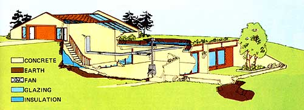

LEFT: The solaratrium of Buck Vaile's passively solar-tempered underground house is so bright and sunny . . . that it can be used as either a winter playroom or a greenhouse. BELOW RIGHT: Large windows along front of the building admit winter sunshine . . . but are protected from summer sun 6y overhang. RIGHT: Exterior view of garage/storage area/atrium . . . above a photo of one of the home's bedrooms. BELOW NEXT: These views?from the living room, through the dining room/family room, to the solaratrium . . , and of the standby ""firestove""?certainly make one point: Living quarters in an underground house can be brighter and airier than the same space usually is in an aboveground dwelling